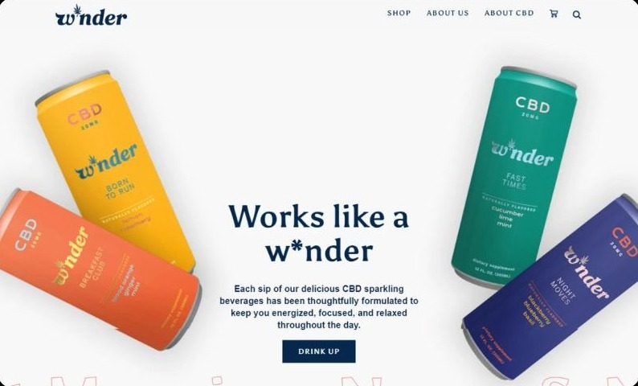
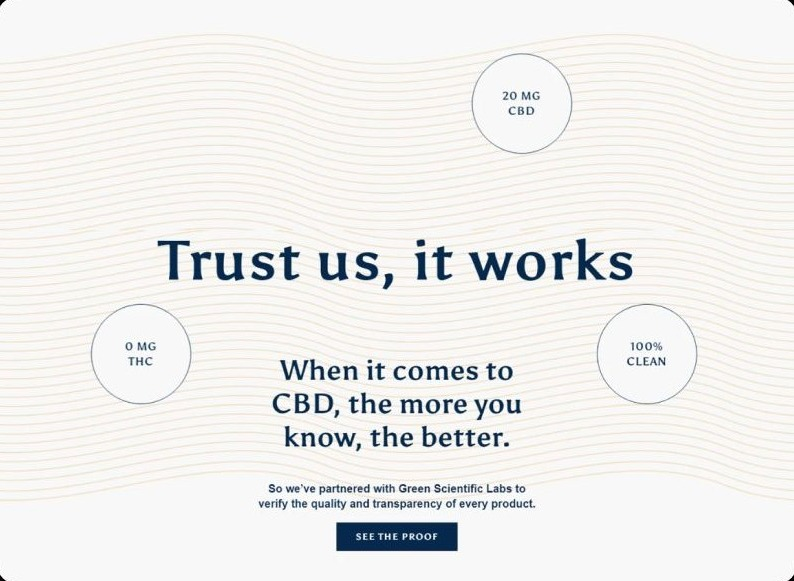
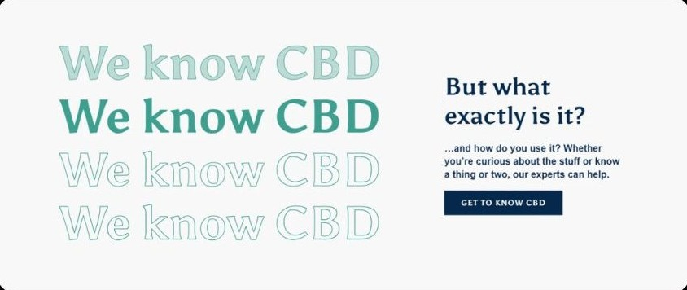
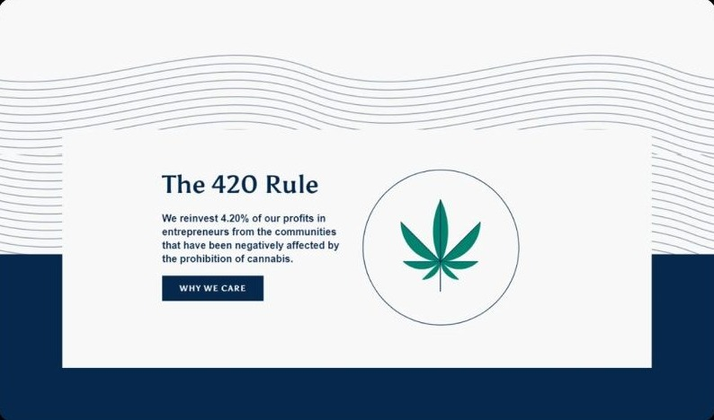
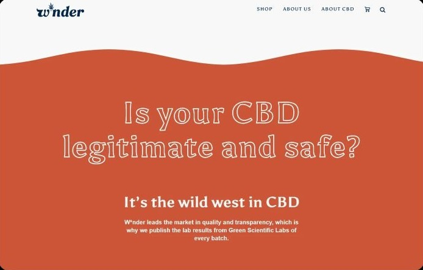
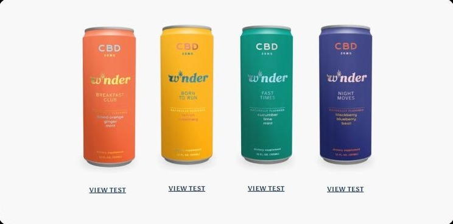

Case study 07 of 10 · Brand site · Independent concept project
W*nder
A CBD brand site that teaches before it sells.
2 min read

W*nder is a real CBD sparkling beverage brand, and this is an unsolicited concept study with no affiliation, commission, or endorsement. The brand identity and product belong to their owners, while the competitor research, flows, screens, and design system on this page are entirely my own exploration and nothing here was adopted or shipped.
Selling a product some visitors still associate with a stigma, where every screen has to earn trust before it can ask for a purchase.
How lab-test transparency is treated as a first-class navigation destination, not a compliance footnote.
You cannot sell CBD to someone who does not trust it
For a first-time CBD buyer, the real barrier is not price or flavor, it is doubt, so the site has to educate and prove safety before it pitches. W*nder is a sparkling CBD beverage brand built around transparency, with every batch tested by an independent lab. The site's job was to turn that testing into something a hesitant visitor can actually find, read, and believe.
- Lab results on competitor sites are buried or missing, so shoppers cannot verify what they are drinking.
- New users lack basic education on what CBD is, what it does, and whether it is safe.
- Lingering cannabis stigma means conventional weed-adjacent branding actively undermines credibility.
Desk research compared Charlotte's Web, Medterra, and Joy Organics on lab-result transparency, educational depth, and navigation clarity to locate the gaps W*nder could own.
Proof, then education, then the sale
The homepage and lab-results page run the same sequence: a warm, un-cannabis identity up front, evidence in the middle, and after the hero's Drink Up button, calls to action that mostly route to education or proof rather than straight to the cart.






The test I designed but did not run
A moderated walkthrough of these five tasks could establish whether a hesitant first-time buyer can reach the lab results, understand what a batch is tested for, and arrive at a purchase without help. It could not establish whether the design converts doubt into trust in the product itself, and because no sessions were held, both questions remain open.
This chapter documents a usability test plan for a concept, not a record of sessions: no participants were recruited, and nothing on this page is validated by real usage.
Appendix: foundations and system
The system underneath the pages: a palette built to feel calm rather than clinical, and the grid that keeps educational content readable.